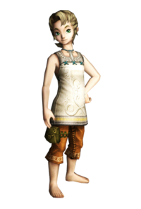
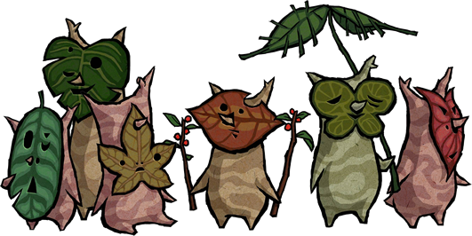
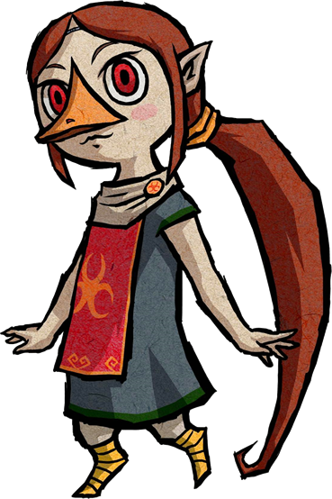
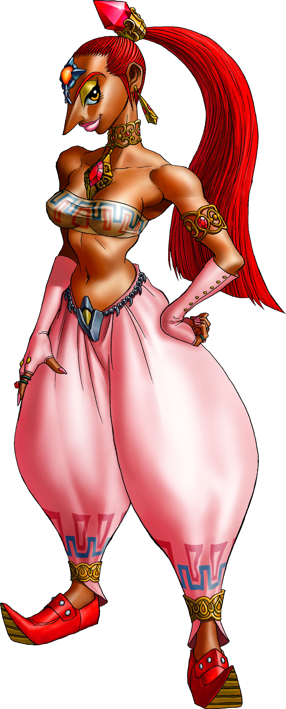

Races

Hylian
Attributes: pointed ears, magical aptitude
The Hylians are a race of humans from the countries of Skyloft, Hyrule and the latter's flooded counterpart, the Great Sea. Descended from the people who lived among the goddess Hylia long prior to the establishment of Hyrule as a kingdom, they are a magic race with pointed ears who have inherited the blood, powers and abilities of their ancient ancestors.
Korok
Attributes: tree-like bodies, Leaf masks
The Koroks are a race in The Legend of Zelda series. They are small, wooden people who wear leaf masks over their faces. They are spirits who are watched over by the Great Deku Tree. In The Wind Waker, the Koroks are the transformed forms of the Kokiri following the Great Flood.


Goron
Attributes: large, mountain-dwelling, immense strength
The Gorons are a race of rock people inhabiting Hyrule, Termina, and several other countries, typically living in mountain ranges. Gorons are one of the most consistently present races throughout The Legend of Zelda series.
Zora
Attributes: fins, Webbed feet, Swim
Zoras known as Sea Zoras in Oracle of Ages, are a race in The Legend of Zelda series. The Zora are an aquatic folk who possess fish and amphibian like traits, including fins, webbed feet and gills, which allow them to swim and thrive underwater. Zoras can come in many shapes and sizes, but are most commonly depicted as humanoids with long tail fins on their heads and finned appendages on their arms and legs.


Rito
Attributes: avian features
The Rito are a race in The Legend of Zelda series. They are people who possess avian features, including wings with which gives them the ability of flight. In The Wind Waker, they are primarily humanoid with few bird-like traits. In Breath of the Wild, Rito have adopted completely avian forms.
Gerudo
Attributes: desert-dwelling, mostly female, brown skin color
The Gerudo are a race in The Legend of Zelda series. They are warriors by reputation, feared and respected in the countries they inhabit. Due to an unique biological quirk, the race consists almost solely of females. A single male Gerudo is born into the tribe every hundred years. This male is destined by Gerudo law to become their king. Ganondorf is the only Gerudo male to have appeared in the series.
